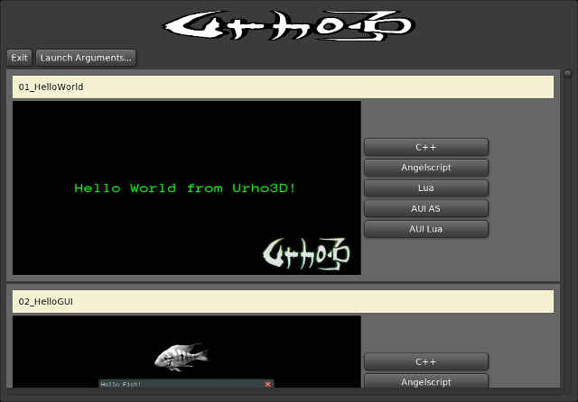

Features:
The user interface toolkit from the Atomic Game Engine, still MIT Licensed
Based on TurboBadger, with an Object wrapper to add event handlers and actual usability.
It includes original TurboBadger widgets, plus new widgets written for the Atomic Game Engine.
It has a dark and light color themes with redone look and feel.
It has been rebranded as AUI for integration into Urho3D, and coexists with internal UI.
It has C++ API, and full bindings for AngelScript and LUA.
There is a new example program, 95_Periodic, showing typical usage of the AUI widget set in C++, AngelScript and Lua.
It has ported samples for both AngelScript and Lua, replacing UI with AUI.
Created a new cross platform (i.e. AUI+Angelscript) sample Launcher which can invoke any of the 5 variations of samples, Native C++, AngelScript, Lua, AUI + AngelScript, AUI + Lua, and a new bin directory command to start the launcher, Launcher.sh and Launcher.bat
Bonus, a game using AUI can deploy to desktop or mobile and still look good.
To try this the easy way:
https://github.com/JimMarlowe/Urho3D/tree/JM-ATOMIC-UI
then download a zip file of it, and build it as you would for Urho3D (for MinGW add -DURHO3D_NETWORK=0, OSX add -DURHO3D_PCH=0)
Or you can git the JM-ATOMIC-UI branch and do what you will
